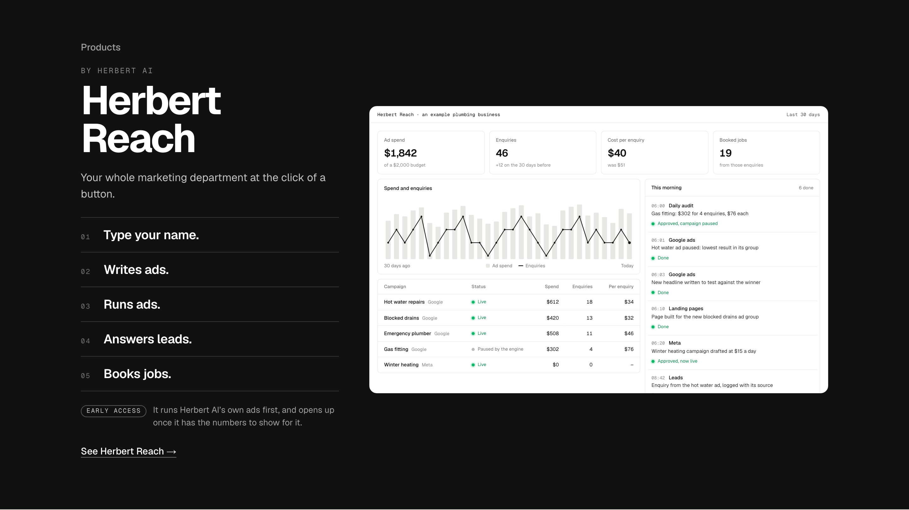
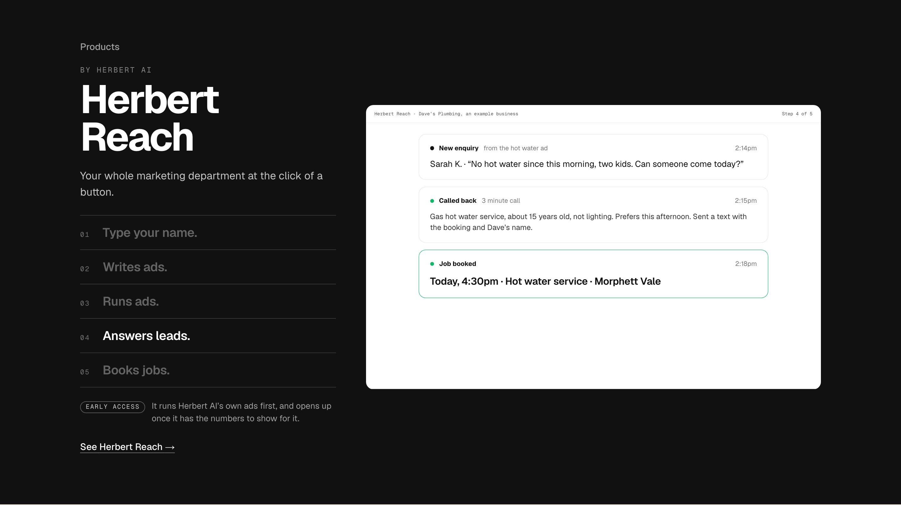
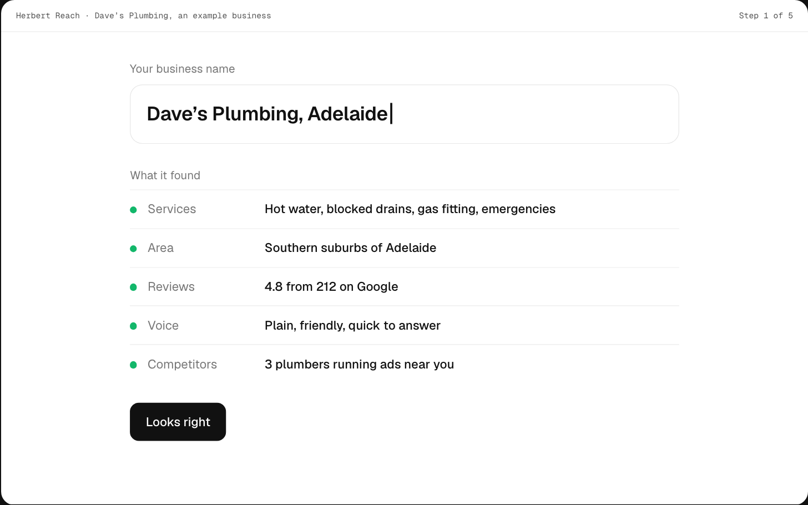
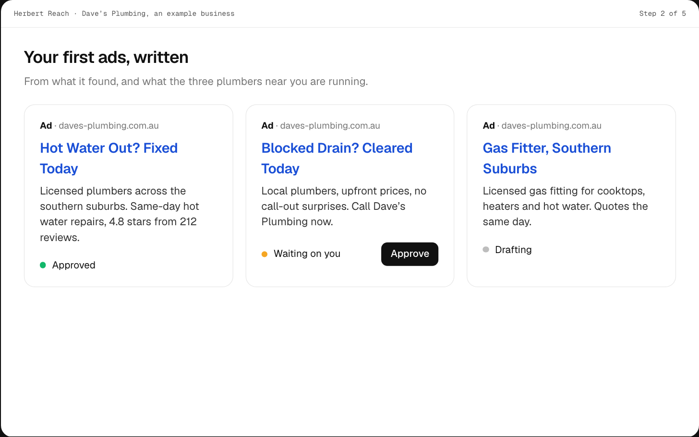
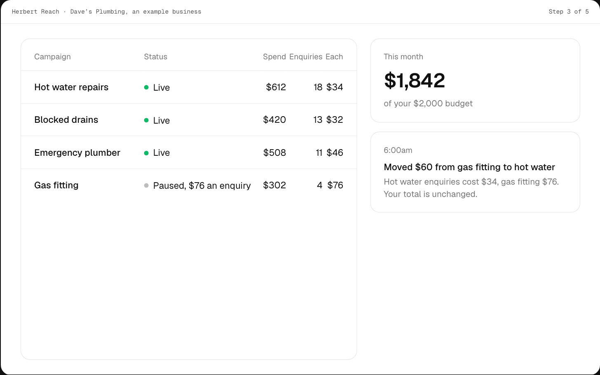
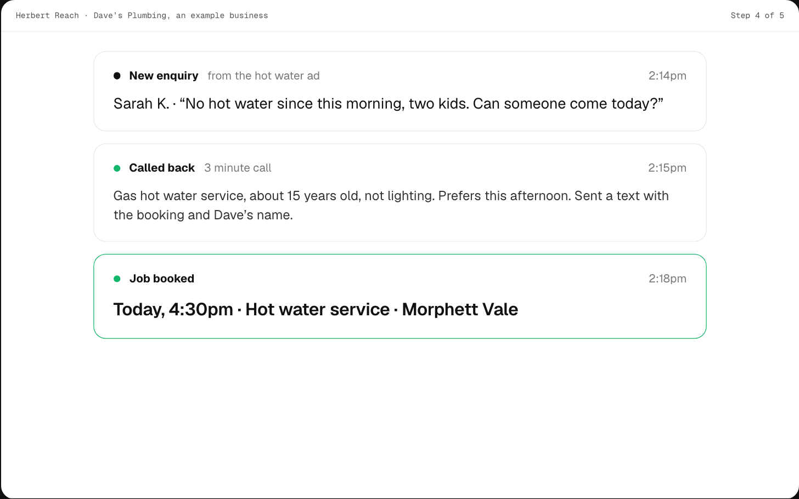
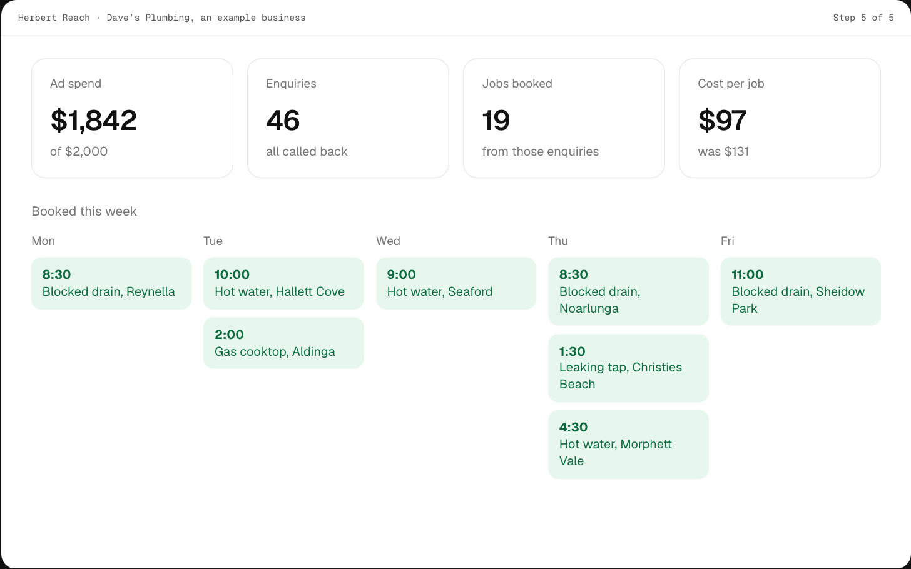
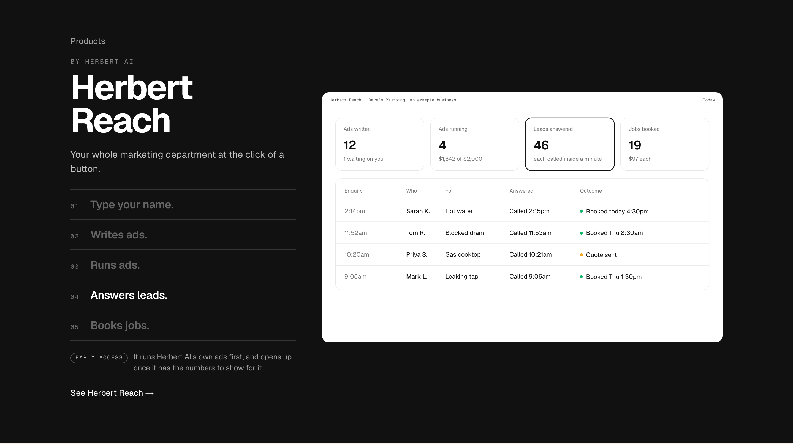

Detail 3 of 6. Your story is built into the band, so the screen beside it should show the same story. Drawn at 1440 on the real band; the phone version is detail 6. Every figure belongs to an example plumbing business, and no ad platform but Google is shown, since Meta still waits on app review.
TodayThe ads-only dashboard from before Herbert Reach was defined: campaigns, spend, a morning feed. It shows step 3 and part of 4, and says nothing about steps 1, 2 and 5.

1. The story playsThe screen shows the step the list is on, and the row lights up: your name and what it found, the first ads with one waiting on you, the ads running, an enquiry called back and booked, then the week of booked jobs. Five screens, one after another, once in view. Every step of the story is something you can see, and the approval shows up as the amber card in step 2. Recommended. Shown here on step 4; all five are in the strip below.


01 Type your name.

02 Writes ads.

03 Runs ads.

04 Answers leads.

05 Books jobs.
2. One dashboard, matched to the storyOne screen with a tile per step (ads written, ads running, leads answered, jobs booked) and the leads table under them. As the list lights a row, its tile is outlined. Cheaper to build, but step 1 has no tile and it reads as a report, not a story.

3. The day’s feedOne day in story order: research, ads written, approved, then each enquiry called back and booked, with the day’s numbers beside it. The closest to the Herbert OS screens above it, so the page repeats itself, and the list is not lit.